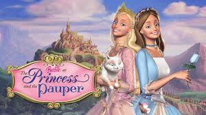
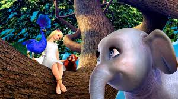
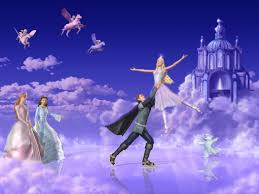
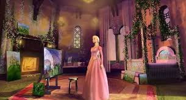
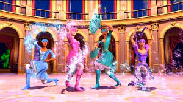
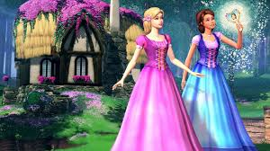
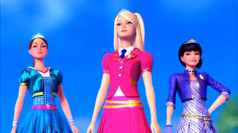
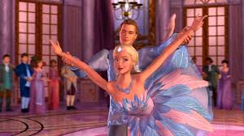
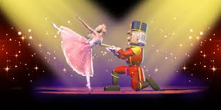
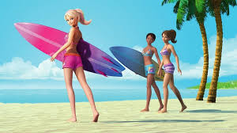

Barbie Movie Descriptions
Summaries and Ranking Details
1. Barbie as The Princess and The Pauper
Release Year: 2004
Plot: In a royal twist of fate, Princess Anneliese and humble seamstress Erika—identical in appearance but worlds apart—switch places to save the kingdom from ruin. When the conniving Preminger plots to take over the throne, the girls use their courage, cleverness, and music to outwit him. It’s a story of friendship, love, and knowing you’re more than your circumstances.
Ranking Specifics:
- Creativity: 9/10 - The clever switch between royalty and a pauper delivers a fresh, exciting twist on a classic tale of heart and heroism!
- Character Writing: 9/10 - Princess Annaliese and Erika both shine with strong, relatable personalities, bringing this timeless story to life.
- Villain: 9/10 - Preminger is deliciously dastardly, making him one of Barbie's most memorable villains, with just the right amount of drama and flair!
- Plot: 9/10 - With and echanting mix of intrigue, royal drama, and heartfelt friendship, this plot keeps you hooked from start to finish.
- Visuals: 7/10 - While the visuals are charming, they fall just short of the high sparkle and shine that we expect from Barbie's magical world.
- Theme: 9/10 - A powerful message about identity, love, and the courage to fght for what's right, all wrapped up in a princess-perfect package!
Total Score: 8.7/10
Review: Musical numbers, strong female leads, and a deliciously dramatic villain. A classic that proves magic is more than just a royal crown-it's in your heart!
2. Barbie as The Island Princess
Release Year: 2007
Plot: After being shipwrecked as a baby, Rosella grows up on a tropical island surrounded by animal friends. When a prince from a distant kingdom discovers her, she journeys to civilization to find her past—but court politics and a scheming villainess threaten everything. Through kindness, bravery, and song, Rosella uncovers her identity and changes her world for the better.
Ranking Specifics:
- Creativity: 9/10 - An original setting filled with catchy songs and tropical vibes makes this one of the most adventurous Barbie films.
- Character Writing: 8/10 - Rosella is a strong character with a lot of heart, though her story sometimes feels too safe for the tropical paradise setting.
- Villain: 7/10 - While the villainess brings the drama, she lacks the depth and intrigue of other Barbie antagonists.
- Plot: 8/10 - A journey of self-discovery set in an exotic world—heartfelt but could use a little more excitement.
- Visuals: 8/10 - Gorgeous tropical landscapes and vibrant scenes make this film feel like a true vacation for the eyes!
- Theme: 9/10 - The theme of friendship, bravery, and embracing one’s roots gives this movie a heartwarming, feel-good factor.
Total Score: 8.2/10
Review: Original setting, catchy songs, and sweet animal sidekicks. It’s one of the most heartfelt stories.
3. Barbie and the Magic of Pegasus
Release Year: 2005
Plot: Annika, a daring princess, defies an evil sorcerer named Wenlock who turns her family to stone. With the help of a winged horse—who turns out to be her enchanted sister—Annika embarks on a quest to forge the magical Wand of Light. Racing through icy mountains and enchanted forests, she must conquer her fears to save her family and her kingdom.
Ranking Specifics:
- Creativity: 9/10 - A winged horse, an ice kingdom, and an anti-romantic lead? Kinda ahead of its time and adds a layer of uniqueness!
- Character Writing: 7/10 - Annika is brave but a bit predictable—her sisterly bond with the winged horse is what really shines.
- Villain: 8/10 - Wenlock is a strong antagonist, adding real danger to the story with his icy grip on the kingdom.
- Plot: 8/10 - A quest to save her family with magic and adventure! A classic storyline that is thrilling, though a tad predictable.
- Visuals: 9/10 - Stunning visuals, especially the icy landscapes and magical moments—pure winter fantasy.
- Theme: 8/10 - The themes of courage and self-sacrifice really resonate, though the romance feels secondary compared to the magical adventure.
Total Score: 8.7/10
Review: A winged horse, an ice kingdom, and an anti-romantic lead? Kinda ahead of its time.
4. Barbie as Rapunzel
Release Year: 2002
Plot: Rapunzel lives in a tower under the cruel watch of the sorceress Gothel, unaware of her royal heritage. With the help of a magical paintbrush that brings her art to life, she escapes her prison and uncovers a long-lost family secret. Rapunzel must stand up to Gothel, restore peace between rival kingdoms, and reclaim her freedom through creativity and inner strength.
Ranking Specifics:
- Creativity: 9/10 - The paintbrush portal idea is super inventive, giving the classic fairytale a fresh, artsy twist!
- Character Writing: 8/10 - While Rapunzel’s character is likable, her journey feels a bit predictable—though still full of heart.
- Villain: 7/10 - Gothel is genuinely sinister, bringing a darker edge to the story and creating that perfect fairytale villain vibe.
- Plot: 8/10 - The story of escaping captivity and uncovering a royal secret is timeless, though it could use a bit more excitement in the middle.
- Visuals: 8/10 - While charming, the visuals are a little dated and don't quite have the shine of later Barbie films.
- Theme: 6/10 - The theme of freedom and creativity is inspiring, though it feels somewhat lost in the midst of all the plot twists.
Total Score: 7.3/10
Review: The paintbrush portal idea is super inventive, and Gothel gives serious dark fairytale energy
5. Barbie and the Three Musketeers
Release Year: 2009
Plot: Corinne dreams of becoming a Musketeer like her late father, but in a world where girls are expected to be maids and not warriors, her dream seems impossible. With three other ambitious young women, she secretly trains and uncovers a plot to harm the prince. Together, they prove that courage, friendship, and teamwork can shatter any glass ceiling—or chandelier.
Ranking Specifics:
- Creativity: 8/10 - A fun twist on the classic Musketeer tale with a strong female-led spin and some sparkling sword-fighting action!
- Character Writing: 8/10 - The characters are strong and determined, but they could use a bit more depth to really bring out their individual stories.
- Villain: 6/10 - The villain lacks the complexity of some other Barbie antagonists, but still adds some necessary drama.
- Plot: 7/10 - A fast-paced, action-packed story, though it sometimes feels a little rushed in terms of character development.
- Visuals: 7/10 - Solid visuals, though not as stunning as some other Barbie films in the franchise.
- Theme: 8/10 - Girl power, teamwork, and proving you can break through any barrier—what’s not to love?
Total Score: 7.3/10
Review: Female empowerment and sword-fighting sparkle—what's not to love? A bit rushed, though.
6. Barbie and the Diamond Castle
Release Year: 2008
Plot: Best friends Liana and Alexa discover a magic mirror containing a trapped muse, Melody, who tells them of the hidden Diamond Castle. As they journey to defeat an evil muse bent on silencing music, their friendship is tested by temptation and doubt. In the end, it’s their unshakable bond and love for music that saves the day and restores harmony.
Ranking Specifics:
- Creativity: 8/10 - A story about friendship and music with one of the best Barbie duos (Liana & Alexa) that brings the magic of music to life!
- Character Writing: 7/10 - Liana and Alexa are sweet, but they lack the depth of some of Barbie's more complex characters.
- Villain: 7/10 - The evil muse is fun, but her motivations could have been explored a bit more to make her a stronger antagonist.
- Plot: 7/10 - The plot is charming, though it follows the familiar "magical quest" formula without much deviation.
- Visuals: 7/10 - Gorgeous visuals, though some of the magical moments could have been given more sparkle and shine.
- Theme: 8/10 - A beautiful theme of friendship, music, and overcoming adversity to restore balance in the world.
Total Score: 7.3/10
Review: A story about friendship and music with one of the best Barbie duos (Liana & Alexa).
7. Barbie: Princess Charm School
Release Year: 2011
Plot: Blair Willows, a kind-hearted waitress, unexpectedly earns a spot at Princess Charm School, where commoners train to become royals or lady royals. As she navigates the rules of royal life and new friendships, she uncovers a plot against the throne and learns she may be more than just a scholarship student—she might be the kingdom’s lost princess.
Ranking Specifics:
- Creativity: 8/10 - A refreshing look at a modern royal school, but it could have used more twists.
- Character Writing: 7/10 - Blair is lovable, though the supporting characters could have been a little more fleshed out.
- Villain: 7/10 - The villain is more of a standard "evil stepmother" type, with few surprises.
- Plot: 7/10 - A sweet story of self-discovery, but it’s a bit predictable.
- Visuals: 7/10 - Bright, vibrant, and fitting for the school theme, but not as magical as some other Barbie movies.
- Theme: 8/10 - The theme of friendship, hard work, and discovering one’s true potential resonates well.
Total Score: 7.3/10
Review: One of the more modern classics—love the secret royalty angle and makeover moments.
8. Barbie of Swan Lake
Release Year: 2003
Plot: Odette, a baker’s daughter, stumbles into an enchanted forest and is turned into a swan by the evil wizard Rothbart. Guided by a unicorn and protected by the Fairy Queen’s magic, she learns she is the one destined to save the forest. With inner courage and love, Odette fights to break the curse and bring harmony to both her world and the magical realm.
Ranking Specifics:
- Creativity: 7/10 - A graceful, magical take on Swan Lake, but the story feels a bit familiar and could use more innovative twists.
- Character Writing: 7/10 - Odette is a likable heroine, but her development doesn’t feel as strong as some of Barbie’s other characters.
- Villain: 8/10 - Rothbart is a strong antagonist, adding tension and danger to the story with his dark magic.
- Plot: 7/10 - A solid plot, though it doesn’t take as many risks as some of Barbie's other adventures.
- Visuals: 7/10 - Lovely and elegant, though the animation is a bit dated compared to newer Barbie films.
- Theme: 7/10 - The themes of bravery, self-discovery, and love are lovely, but they don’t have the same impact as other Barbie films.
Total Score: 7.2/10
Review: Beautiful music and ballet, a bit safe story-wise but elegant overall.
9. Barbie in the Nutcracker
Release Year: 2001
Plot: Clara receives a magical nutcracker who comes to life to battle the evil Mouse King. When she’s swept into a magical world, Clara joins her new friend on a journey to find the Sugarplum Princess and save the kingdom. With bravery and kindness, Clara defeats the villain, restores peace, and discovers the truth about herself in this dreamy holiday classic.
Ranking Specifics:
- Creativity: 7/10 - A beautiful adaptation of the classic Nutcracker ballet, though it leans a bit on nostalgia and doesn’t fully push creative boundaries.
- Character Writing: 6/10 - Clara’s character feels a little flat compared to other Barbie heroines, but she’s still relatable and brave.
- Villain: 7/10 - The Mouse King is suitably sinister but not as menacing as some of the more memorable Barbie villains.
- Plot: 7/10 - A classic fairytale that captures the magic of Christmas, though it can feel a bit predictable.
- Visuals: 6/10 - While it’s nostalgic, the animation hasn’t aged as well as the later Barbie films.
- Theme: 8/10 - A timeless theme of bravery, kindness, and believing in yourself, perfect for the holiday season.
Total Score: 6.8/10
Review: First ever Barbie movie! Nostalgic and sweet, though animation hasn’t aged perfectly.
10. Barbie in A Mermaid Tale
Release Year: 2010
Plot: Merliah, a surfing teen in Malibu, discovers she’s actually half-mermaid and the daughter of an undersea queen. When her mother is taken by the tyrannical Eris, Merliah dives into the ocean world of Oceana. With the help of dolphin and seahorse friends, she uses her brains and bravery—not just her powers—to defeat Eris and bring balance to the sea.
Ranking Specifics:
- Creativity: 7/10 - Surfing mermaid Barbie with glowing tails? Pretty rad. But story’s a bit surface-level (pun intended).
- Character Writing: 7/10 - Merliah is fun and relatable, but her character could have been developed a bit more to make her journey more impactful.
- Villain: 6/10 - Eris is a bit one-dimensional, and her motivations don't have the depth of other Barbie villains.
- Plot: 6/10 - While the underwater adventure is charming, the plot feels a bit basic and predictable at times.
- Visuals: 8/10 - The underwater world is beautifully animated, with vibrant colors and oceanic details.
- Theme: 7/10 - Emphasizing bravery and intelligence over pure power is a refreshing message for a mermaid tale.
Total Score: 6.8/10
Review: Surfing mermaid Barbie with glowing tails? Pretty rad. But story’s a bit surface-level (pun intended).